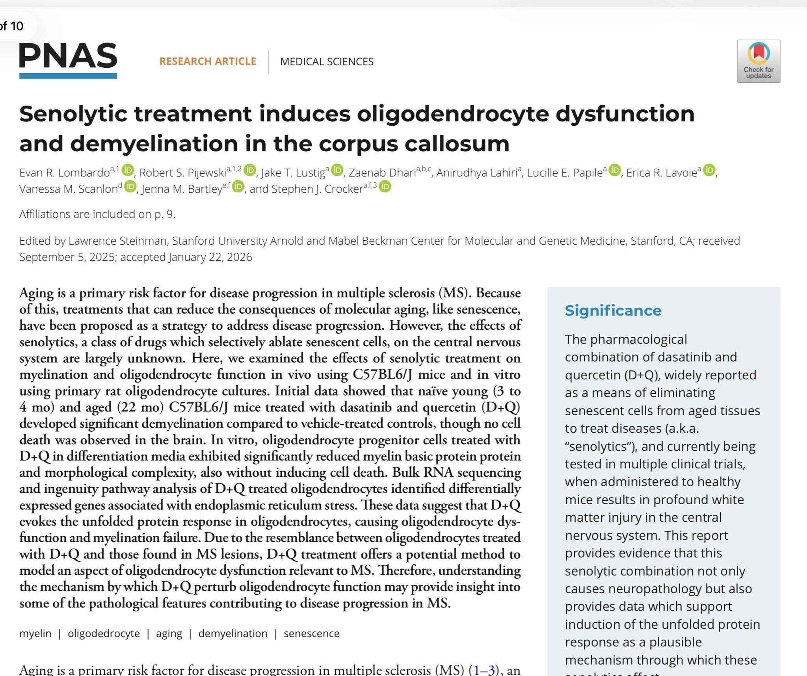
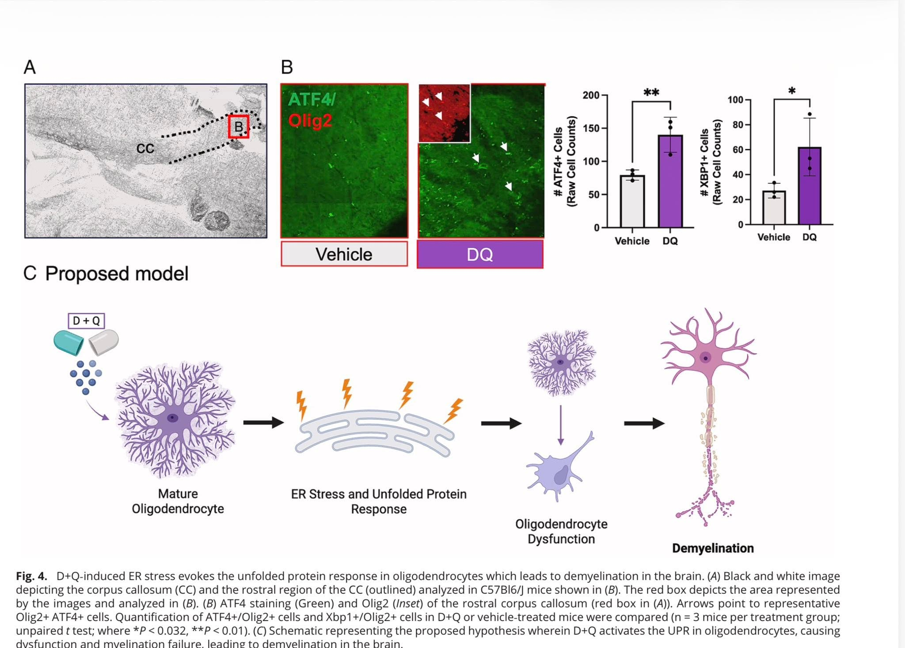
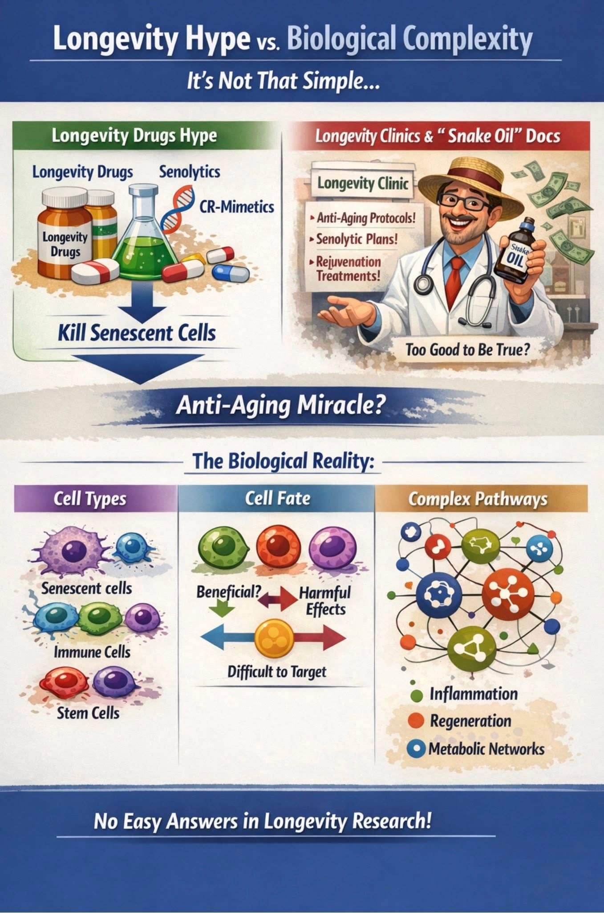
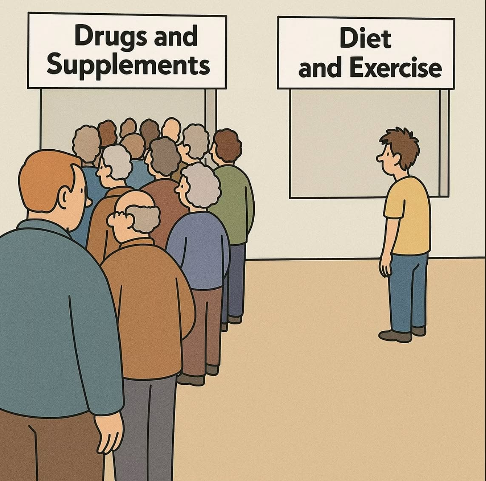

The skin of a 90yo is composed of over 80% senescent cells.
If you were to kill all these senescent cells at once, the skin would literally melt off their body.
I use this example to illustrate the broader point:
It’s not surprising that senolytic drugs would have side effects if used too aggressively. In old people, many senescent cells still provide important functions (like keeping the skin barrier intact).
That’s exactly what we see in this new paper.
#senolyticsHD #agingHD #longevityHD #senescenceHD
🔬 Senolytics: promising, but far from a “magic bullet”
There’s a growing narrative in longevity medicine:
eliminate senescent cells → rejuvenate tissues → extend healthspan.
Senolytics sit right at the top of that promise.
But biology is rarely that simple.
A recent PNAS (2026) study challenges this oversimplified view. The combination of dasatinib + quercetin (D+Q) — one of the most widely used senolytic cocktails — was shown to:
- Induce significant demyelination in the brain
- Cause oligodendrocyte dysfunction without killing the cells
- Activate ER stress and the unfolded protein response
- Impair myelination despite no overt cytotoxicity .
Paper · Proc Natl Acad Sci U S A · 2026Senolytic treatment induces oligodendrocyte dysfunction and demyelination in the corpus callosum.Aging is a primary risk factor for disease progression in multiple sclerosis (MS). Because of this, treatments that can reduce the consequences of molecular aging, like senescence, have been proposed as a strategy to address disease progression. However, the effects of senolytics, a class of drugs which selectively ablate senescent cells, on the central nervous system are largely unknown. Here, we examined the…pnas.org
👉 In other words: removing “senescent burden” does not automatically translate into improved tissue function, but quite the opposite.
This is a crucial point.
We are seeing an explosion of:
- Longevity clinics promoting longevity supplements and drugs
- Repurposed anti-aging therapies
- Direct-to-consumer senolytic protocols
Often marketed with overly simplistic narratives, sometimes by people more interested in marketing than in science. This is very dangerous!
💡 Reality check:
Aging biology is highly context-dependent.
Cells that appear “senescent” may still play key structural, signaling, or compensatory roles — especially in complex systems like the brain and other key organs.
Paper · Nat Biotechnol · 2025Senolytics under scrutiny in the quest to slow agingnature.com
⚠️ Blunt interventions can disrupt these balances.
📌 Take-home message:
Senolytics are a powerful research tool and may have therapeutic potential, but we are far from understanding when, where, and in whom they are beneficial.
Until then, caution is not skepticism: it’s scientific rigor.
#Longevity #Senolytics #Aging #Neuroscience #EvidenceBasedMedicine #TranslationalScience




